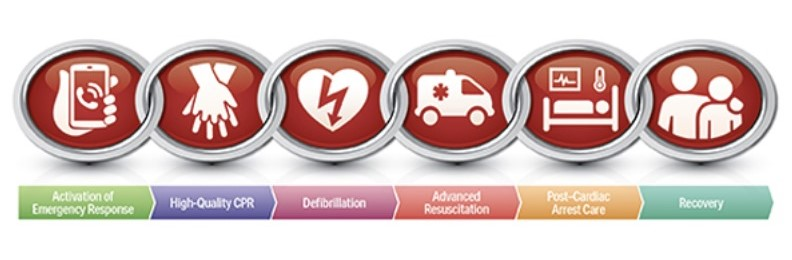

What is CPR ?
- CPR – or Cardiopulmonary Resuscitation – is an emergency lifesaving procedure performed when the heart stops beating. Immediate CPR can double or triple chances of survival after cardiac arrest.
- This technique aims to keep oxygen moving to vital organs, especially the brain, until the heart can beat on its own again.
FLOWCHART
The 6 links in the adult out-of-hospital Chain of Survival are:
- Recognition of cardiac arrest and activation of the emergency response system (calling 9-1-1 in the US).
- Early CPR with an emphasis on chest compressions.
- Advanced resuscitation by Emergency Medical Services and other healthcare providers Post-cardiac arrest care.
- Rapid defibrillation.
- Recovery (including additional treatment, observation, rehabilitation, and psychological support).
- A strong Chain of Survival can improve chances of survival and recovery for victims of cardiac arrest.
Common Symptoms
People don't always experience heart attack symptoms the same way. But some symptoms are more common, including:
- Pain or discomfort that spreads to the shoulders, neck, arms, or jaw
- Chest pain that gets worse.
- Sweating, cool, clammy, or pale skin.
- Nausea or vomiting & Shortness of breath.
- Unexplained weakness or fatigue
- Dizziness or fainting
About hands-only CPR
When a person collapses suddenly and isn't breathing or has no pulse,bystanders are often reluctant to help with CPR for fear of doing it wrong or making the situation worse.Or they may be uncomfortable giving mouth-to-mouth breathing to a stranger.Because less than 1/3 of sudden cardiac arrest victims get CPR before thry get to the hospital,the AHA is promoting hands-only CPR
The hands-on CPR technique consists of 2 steps:
- Call 911.
- Do chest compressions.
Hands-only CPR can help a heart attack victim survive 3 to 5 minutes. This may be enough time until emergency medical services arrive. Don't stop CPR until someone with someone with some experience relieves you or help arrives with a defibrillator.This is a machine that can shock the heart back into a working rhythm.